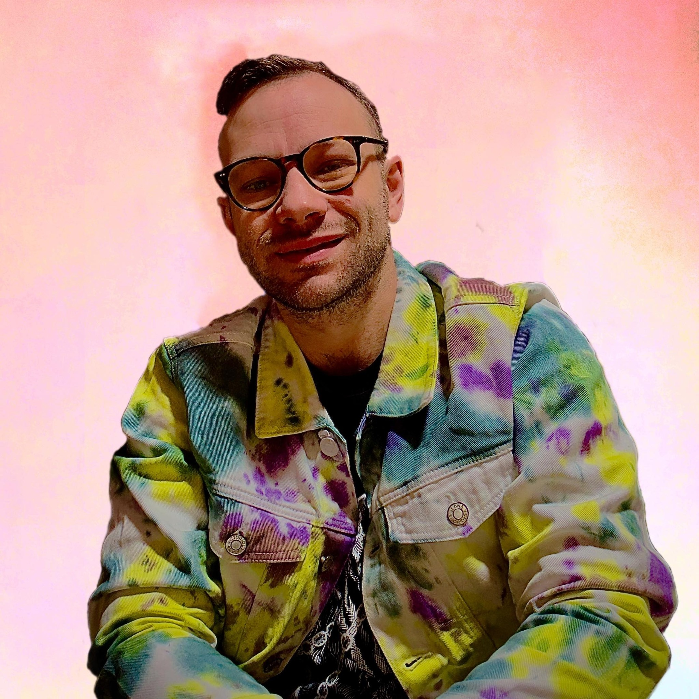

About Me

Artist Statement
I am a photography-based artist focused on conceptual, exhibition-formatted work. My art centers on existential, psychological, philosophical, and sociological issues and the emotions that surround them.
Through my work, I explore the human condition and the complex interplay between our internal world and external reality. Each piece is a window into the human experience, inviting viewers to reflect on their own thoughts and emotions.